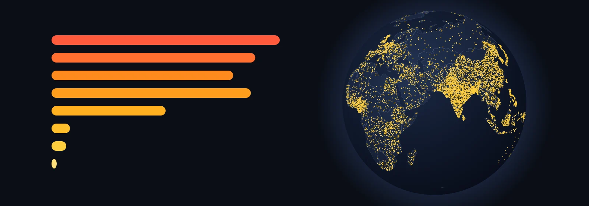

Eight billion, one doubling at a time
Between 560 BCE and 882 CE the number of people on Earth doubled once, and it took 1,442 years. Between 1948 and 1985 it doubled again in 37. Scroll to watch it happen, then take the controls: pick a view, a starting point and a country, and every number on the page tells you where it came from.
All of history in one scroll
Keep scrolling and time moves with you. In the dots view every dot is a million people, dropped at random inside today’s borders of the country they lived in. In the density view each country is coloured by how many people share one square kilometre.
Drag the globe sideways to turn it. The switch in its corner changes every map on this page. The year of each billion is read off the same series, so it can differ by a year from the dates the UN announced.
Play it yourself
The same globe, now with a play button. Drag it to turn it and hover over a country to see its number. Three settings change what you notice: the view, where the story starts and the pace.
The pace matters most. If every year gets the same time on screen, the globe stays nearly empty for nine tenths of the run and everything happens in the last seconds. If every doubling of the world’s population gets the same time, the distant past flies by, because it doubled slowly, and the last century slows down.
Where this number comes from
Under the globe, the orange line is the series the globe plays. The shaded band runs from the lowest to the highest estimate published by nine other authors, and the coloured strip shows whose data each stretch is. Hover over the chart to move the globe to that moment.
One country against the world
Choose a country and a period. The globe turns to it, and the panel shows its population, its share of the world and its rank among 165 countries at every moment. You can also click a country on the globe.
Borders are today’s. “Italy in 500 BCE” means the people who lived on the land that is Italy now, whatever state they belonged to.
Nine moments
The same data as still frames, for print and for comparing at a glance. They follow the view you picked above. Click a frame to open it full size, and use the arrow keys to step through the rest.
Where the numbers are weak
Before 1950 every figure is a reconstruction. Most of the world had no census. Historians work back from tax records, farmland, the size of cities and how many people a hectare could feed. For the year 1 CE, the nine estimates shown here run from 170 to 330 million, and the US Census Bureau’s summary reaches 400.
Before 1700 the series has one figure per century, and before 1 CE one per thousand years. Between them the page assumes steady growth, so plagues and wars shorter than the gap do not show. The Black Death does, because it left the world smaller in 1400 than it had been in 1300.
Where the source changes, in 1800 and 1950, a country’s line can jump: Ethiopia goes from 2.8 to 12 million between 1790 and 1800, and India falls from 374 to 346 million between 1940 and 1950. That is a change of method, not an event. Before 1700 countries are coarser still: India grows in a straight line from 1 CE to 1600.
The dots say how many people lived in a country, not where inside it: Siberia gets as many dots per square kilometre as Moscow. The page covers the 165 countries whose series goes all the way back to 10,000 BCE; the rest, among them Ireland, Serbia and Haiti, add up to about 75 million people today and stay blank on the globe.
Sources
- Our World in Data, Population — the series on every globe and chart.
- Kees Klein Goldewijk, HYDE 3.3, History Database of the Global Environment, Utrecht University, 2023 — before 1800.
- Gapminder, Population v7, 2022 — 1800 to 1949; the link now leads to the v8 documentation.
- United Nations, World Population Prospects 2024 — from 1950.
- Wikipedia, Estimates of historical world population, table “Before 1950” — the band of other estimates, checked against the US Census Bureau’s Historical Estimates of World Population; its rows for 1 CE, 1500 and 1700 are corrected from that table.
- Country outlines: Natural Earth, 1:110 million, public domain. Country areas and centres: mledoze/countries, ODbL. Licences: HYDE, Gapminder and Our World in Data CC BY 4.0; UN World Population Prospects CC BY 3.0 IGO; Wikipedia CC BY-SA 4.0.